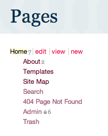

ProcessWire
Open Source CMS mit Custom Fields & API
WDCM Dresden, 7. Februar 2013
@processwire is just incredible. I've never used a CMS that just made sense to a front-end developer. — Phil Diaz (@thephildiaz) 28. Januar 2013
Allgemeine Infos
- Hauptentwickler: Ryan Cramer
- erstmals 2007 erschienen
- (seit Version 2) open source
- PHP 5.2.4+, MySQL 5.0.15+
Features
- einfache, jQuery-artige API
- modulare Pluginarchitektur
- »Seiten« zentrales Konzept
- extrem flexibel und an eigene Wünsche anpassbar
- integrierte Benutzerverwaltung
- aktive Community
Reading around the @processwire forums. It's funny people ask: "Is it possible to -?" and then Ryan says "You just have to..." I ♥ PW — Nicole Bardales (@NicoleBardales) 7. Januar 2013
Puristischer, feingranularer Ansatz
- kaum Standardfelder, keine vorgegebenen Inhaltstypen
- Eingabemöglichkeiten richten sich nach dem ausgewählten Template
-
ausgeklügeltes Template-Management, extrem anpassbar
- Felder können in jedem Template individuell angeordnet, umbenannt, mit template-spezifischen Hilfstexten versehen und auf verschiedene Tabs aufgeteilt werden
Intelligente Eingabe-Interfaces von Feldtypen
- Drag ’n’ Drop
- Multiupload sowie Beschriften und Sortieren der Uploads
- ZIP-Datei hochladen und automatisch enthaltene Dateien einfügen lassen
- Thumbnail-Unterstützung durch Erweiterungsmodul nachrüstbar
Seite, Seiten, Seiten

- Seiten nicht nur für typische Inhaltsseiten verwendet
-
versteckte Seiten dienen als »Datenbankeingabemasken«
- Pflegeoberfläche für beliebige Inhalte (= awesomeness)
Beispiel: Taxonomien
- PW kennt kein separates Taxonomie-System (wie z.B. Kategorien/Tags bei WordPress)
- trotzdem lassen sich beliebig komplexe Taxonomien in ProcessWire erstellen
- Zuweisung der Taxonomie-Begriffe durch Seiten-Referenzfelder
-
neue Taxonomiebegriffe (= neue Seiten) werden direkt aus dem Referenzfeld heraus erstellt
- bequem per autocomplete
- neue Seiten werden automatisch im Hintergrund erstellt und an die zuvor definierte Stelle im Seitenbaum gehängt
Vorteile
- separater Taxonomie-Begriff-Manager überflüssig
- alle Taxonomie-Seiten können mit beliebigen Feldern zur Eingabe von Zusatzinformationen versehen werden (z.B. Beschreibungen, Bilder, interne Steuerinformationen, …)
-
keine zusätzlichen Funktionen für Umgang mit Taxonomie notwendig
- Entwickler, der weiß, wie in Template-Datei Seiten nach bestimmten Kriterien selektiert und Seiteninhalte ausgegeben werden, kann automatisch auch mit jedem beliebigen Taxonomie-System umgehen
Fazit: Testen lohnt sich!